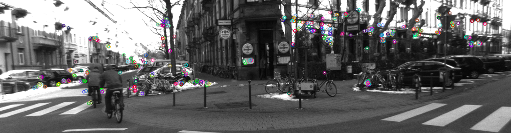
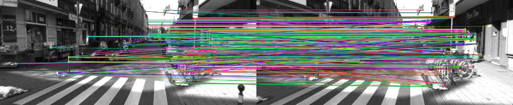
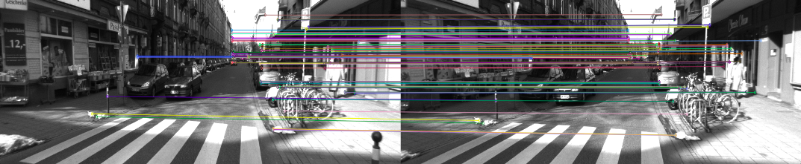

Visual Odometry is the process of estimating motion from consecutive image frames captured by one or more cameras. In order to work with visual odometry one needs to ensure that there is sufficient illumination, not too much motion blur and that consecutive scenes overlap to a certain extent. The following tutorial targets the audience who need a basic understanding of the topic.
The process of visual odometry involves several steps including feature extraction, feature matching/feature tracking, computing essential and transformation matrices between consecutive frames and so on. In this tutorial I first show how to compute the transformation matrix between two consecutive frames and then improve on it.
Feature extraction
The first step involves computing and extracting features from the individual frames. These features are to be matched with the features of the next frame to find out the transformation of the camera pose. There are several feature extraction algorithms currently available. The ones supported by OpenCV are SIFT(Scale Invariant Feature Transform), SURF(Speeded Up Robust Features), FAST, BRIEF, ORB etc. The source code that I have shared uses ORB features. The following image shows ORB features computed in an image.
The reader is encouraged to take a look at this webpage for more information about feature detection.
Feature matching
Once you have detected the features in the image, the next step is to describe it. Matching features between two frames is done based on these feature descriptors. Feature descriptors usually consist of spatial histograms, high-order Gaussian derivate filters etc. In short, they contain description or information about the features detected. Based on this descriptions, feature matching is performed. While one can stick to the brute force method of matching features (by minimizing the distance norm), a more favoured approach is to use FLANN-based matcher. FLANN (Fast Library for Approximate Nearest Neighbors) is a collection of algorithms optimized for fast nearest neighbor search in large datasets and for high dimensional features. Following is an image showing ORB feature matches (in presence of outliers.)
The reader is encouraged to take a look at this webpage for more information about FLANN-based matcher.
Outlier rejection
Outliers refer to incorrect matches between frames. In order to come up with accurate odometry measurements one needs to develop a system which takes care of error introduced due to the presence of outliers. Two common methods for outlier rejection are RANSAC and ratio-test. Ratio test is simpler to implement because it accepts a match if the ratio between the distance measure between the best match and the second best match is less than a certain threshold. Results obtained after using ratio test for outlier rejection is as follows.
The essential matrix and motion estimation
Motion estimation is the most important of visual odometry. For that we first compute the essential matrix (E) between two consecutive frames. Essential matrix contains the geometric relation between two images.
The essential matrix, which embeds the geometric transoformation information (upto an unknown scale factor), can be obtained using the epipolar constraint. The epipolar constraint specifies the line on which the corresponding feature p' (of feature p of one image) on the other image lies. This constraint can be formulated mathematically with the essential matrix as p.E.p' = 0. (See the image below to get a better understanding of what epipolar constraint is.) Using this mathematical relation one can compute the essential matrix given that there are at least 5 point correspondences i.e. at least 5 values of p and 5 values of p'(Nister's 5 pt. algorithm). Alternatively, a more simpler 8 pt. algorithm can be used which uses either 8 feature pt. correspondences or more.
The essential matrix embeds transformation information as E = t'*R where R is the rotation matrix and t' is as follows:
$$ t' =
\begin{bmatrix}
0 & -t_{z} & t_{y}\\
t_{z} & 0 & -t_{x}\\
-t_{y} & t_{x} & 0
\end{bmatrix}
$$
One can use Singular Value Decomposition(SVD) to decompose the essential matrix into R and t'. An enthusiastic reader is encouraged to take a look at the paper for an efficient decomposition of E into R and t'. D. Nister, “An efficient solution to the five-point relative pose prob- lem,” in Proc. Computer Vision and Pattern Recognition (CVPR ’03)". Once you have decomposed the essential matrix, you can obtain the translation vector as $t = (t_{x}, t_{y}, t_{z})$. The transfomation matrix, $T_k$ between pose $C_{k-1}$ and $C_k$ can be formed from $R$ and $t$ as
$$T_k =
\begin{bmatrix}
R & t\\
O & 1
\end{bmatrix}
$$
where $R$ is a 3x3 matrix, $t$ is 3x1 vector, $O$ is 1x3 vector containing all zeros.
Now lets take a recap of what has happened so far by the following flow chart.
At this stage, the translation vector that you have obtained is to be corrected by a scaling factor. The next section describes how to do that.
Relative scale adjustment
The relative scale(r) for translation can be computed from the triangulated positions of a pair of features in two consecutive frames. r is actually the ratio of the distance between the feature points in tth frame and the distance between them in t-1th frame. Mathematically, $$r = \frac{||X_{t}^{i} - X_{t}^{j}||}{||X_{t-1}^{i} - X_{t-1}^{j}||} $$ where $X_{a}^{b}$ is the triangulated position of the $b^{th}$ feature point in frame $a$. Here, The translation vector is to be multiplied with this relative scale factor.
At this stage you should be able to implement a basic version of visual odometry. So cheers! Now would be a good time to take a look at the source code. However one may notice that in large datasets or in case of loops a lot of drift may arise. This error is actually incremental and propagates through time.
In order to deal with that, the following improvements are made. Note that these are some additional improvements on the basic design.
Feature binning
Feature binning ensures that the features computed in each frame is distributed more or less uniformly throughout. One way to achieve that is by dividing the entire picture into rectangular grids and selected $k$ best features from each grid.
Feature tracking over multiple frames
Until now we used the transformation matrix ($T_k$) obtained from the 2 consecutive frames to compute the current pose($C_k$) i.e. this transformation matrix, $T_k$ depends only on $k-1^{th}$ frame and $k^{th}$ frame and, $C_k = T_k.C_{k-1}$. If at any point of time some error gets introduced while estimating $T_k$, not only we will wrongly evaluate $C_k$, but also this error propagates which will introduce error for evaluating $C_{k+1}$, $C_{K+2}$, ... so on. Hence, it's better if we evaluate the current pose based on last 'n' frames in stead of the last frame only. In order to do so it's important to track features over multiple frames. Keeping track of features over multiple frames via feature matching at every new frame is expensive. A better approach would be to track detected features using
Windowed pose graph optimisation and bundle adjustment
Now that we have the track of a feature over say last $N$ frames, we will have a sequence of transformation matrices $\{T_{k-1}, T_{k-2}, ..., T_{k-N}\}$. Based on these transformation matrices and last N poses $\{C_{k-1}, C_{k-2}, ..., C_{k-N}\}$, we will be able to find the estimated current pose from each of the last N poses. That is, mathematically, we will be solving the following optimization problem.
$$ C_k = arg \ min_{C} \sum_{i=k-N}^{k-1}||C - T_i.C_i||^2 $$
The above problem is called the pose graph optimisation problem or more precisely in this case the windowed posed graph optimisation problem mainly because here we optimise the pose graph over a window of last 'N' frames. One important thing to note that this optimisation problem is non-linear. This is because of the orientation part of the pose vector which adds the non-linearity (through the trigonometric functions.) The solution to this nonlinear optimisation problem is discussed in my next blog post.
Especially in case of stereo visual odometry, one might consider optimising both the pose graph as well as the 3D point cloud together, which is taken care by windowed bundle adjustment. Windowed pose graph optimisation is thus a special case of windowed bundle adjustment which only optimises the poses. The corresponding optimisation problem here would be
$$ X_i, C_k = arg \ min_{X_i, C_k} \sum_{i, k} ||p_{i,k} - g(X_i, C_k)||^2 $$
Here, $X_i$ is the $i^{th}$ 3D point. $p_{i,k}$ is the projected position of $i^{th}$ 3D point in the image plane for pose 'k'. $g(A,B)$ is the projection function that projects 3D point A into the image plane for pose B. $||p_{i,k} - g(X_i, C_k)||$ is thus actually the so call the reprojection error which is to be minimised for bundle adjustment.
December, 2015